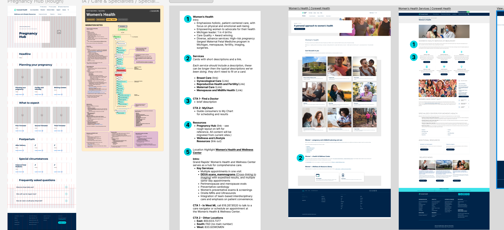
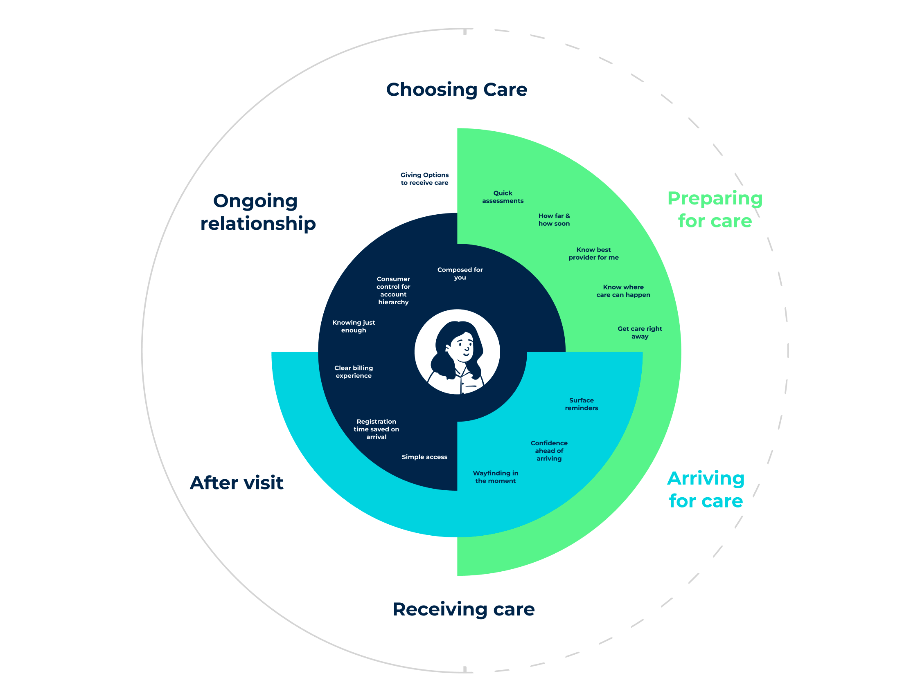
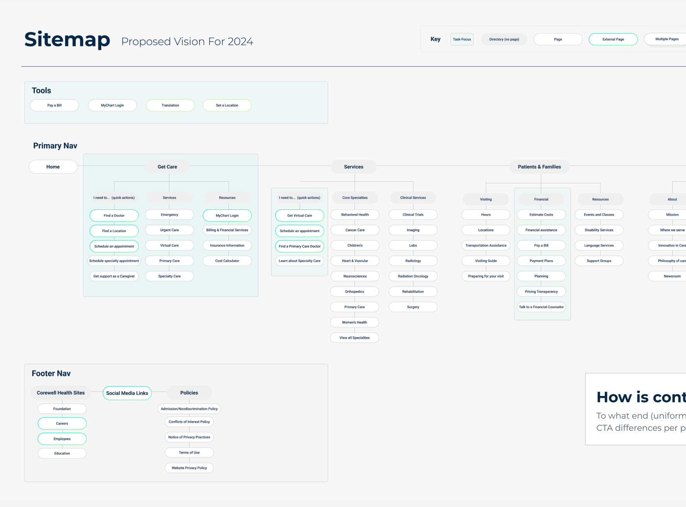
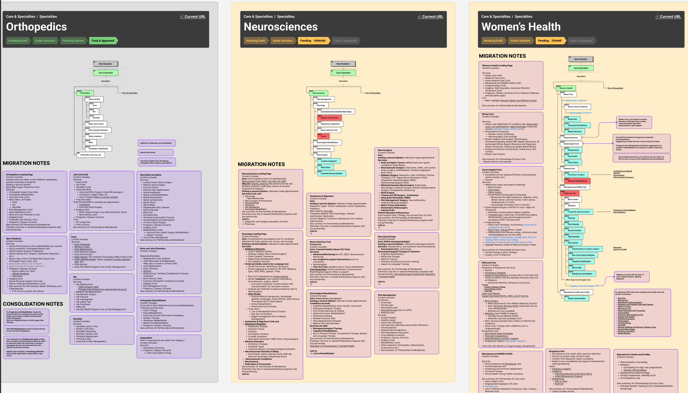
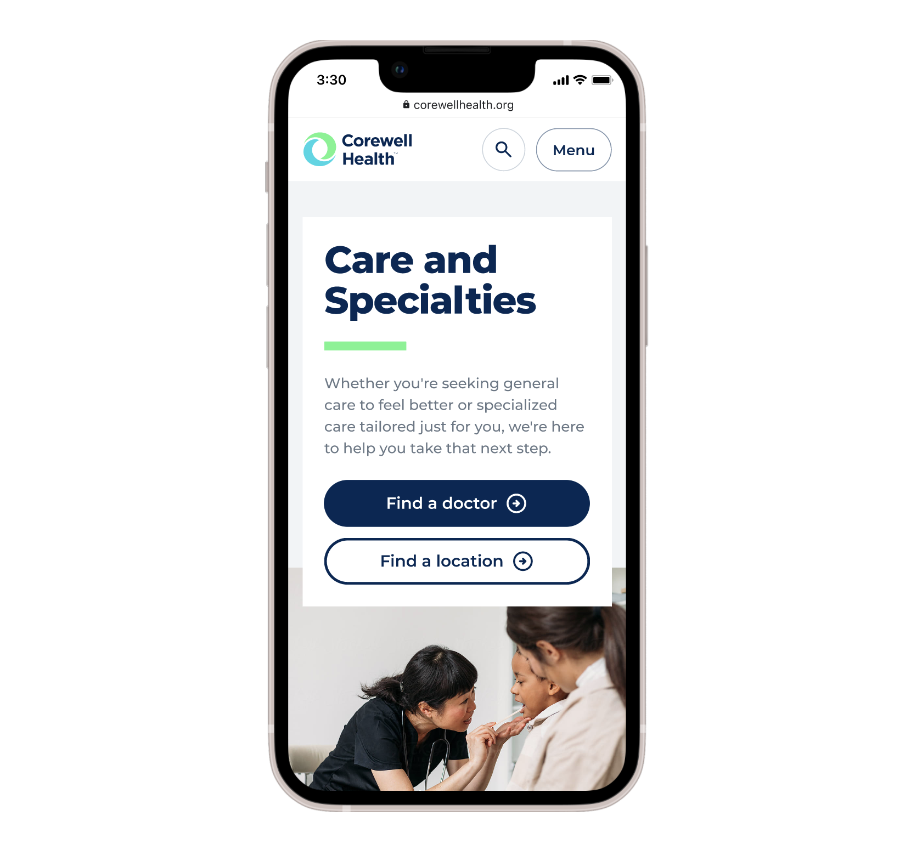
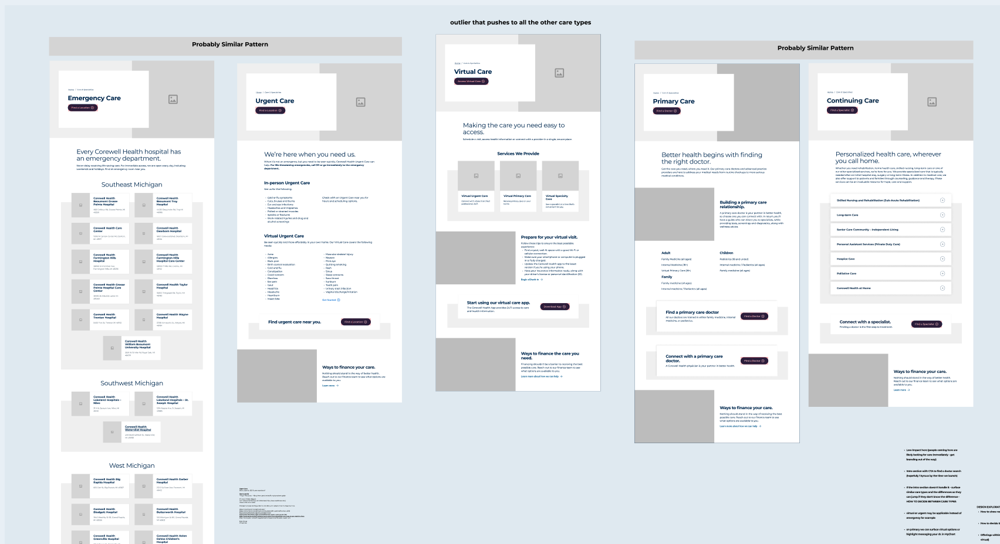

Unifying 14 core service lines and 30+ departments into a single, patient-centered digital ecosystem following a major organizational merger
Visit Site ↗Following the merger of Beaumont, Spectrum, and Lakeland Health, Corewell Health inherited more than 14,000 pages of disconnected content, overlapping navigation systems, duplicated services, and inconsistent digital patterns across multiple healthcare networks. Patients were struggling to find care information, navigate services, and understand how the newly merged organization connected together.
The opportunity was to build clarity, trust, and continuity for millions of patients making healthcare decisions across 14 core service lines and 30+ departments, while aligning stakeholder groups from three legacy organizations, each carrying different operational models, governance structures, and strong opinions about how care should be represented online. Accessibility, SEO preservation, healthcare compliance, and significant public scrutiny were all live constraints during an active organizational launch.
I led a phased, systems-oriented approach that started with large-scale audits of content, navigation, patient journeys, and service models, then restructured everything around how patients actually think about finding care. Six workstreams ran in parallel at different stages of readiness, which meant I had to do two things at once: keep stable work moving and prevent less-defined efforts from stalling the whole program.
Sequencing & Prioritization
I sequenced six workstreams (nutrition, surgery, pharmacy, cancer, lab, and wellness) by readiness rather than organizational priority. In-flight service lines moved through a workshop, content blocking, review, and design pipeline I established. I parked exploratory efforts like wellness and lifestyle resources until the right inputs existed. My operating principle: finish what's moving before starting what's fuzzy, and build for how consumers think, not for how the org had structured itself internally.
Cross-Functional Alignment
I worked at the intersection of Corewell marketing, UX and IA, content strategy, and technical site mapping teams, each with a different view of what the site should be. My role was to translate business and clinical needs into web structure that patients could actually navigate. When leadership direction shifted between an approval-heavy governance model and a launch-fast approach, I kept the program moving by surfacing hidden assumptions, recommending simpler structures, and establishing a shared commitment to build an initial version and iterate rather than wait for a complete answer.
Team Leadership & Development
I managed team members individually throughout the engagement. Beyond program coordination, I partnered with Corewell directly on their in-house UX hiring process, helping them identify the right capabilities as they built their own team. On the delivery side, I used facilitation as a coaching tool: helping designers and stakeholders distinguish between service line content, support resources, and location presentation; breaking large ambiguous decisions into smaller ones; and reframing organizational language into terms that reflected how patients describe their own needs.
Launch Discipline
I held sensitive or unresolved topics in a staging area rather than forcing premature decisions. I applied a "good enough to launch, then iterate" standard wherever the organization was under pressure to move, protecting both delivery momentum and content quality. That discipline helped the team avoid overbuilding early in the program and kept the most important service lines from being blocked by work that wasn't yet ready.
Alignment broke down repeatedly around one question: whether the site should be organized by service line, by location, or by resource type. Each answer reflected a different team's priorities: clinical, operational, and marketing. Rather than letting the debate stall progress, I redirected the conversation to a single question: how does a patient actually look for care? That reframe gave every team a shared lens to make decisions and move forward.



A unified digital ecosystem that consolidated more than 14,000 fragmented pages into approximately 1,500 strategically structured experiences, with simplified navigation, standardized service discovery, and a scalable information architecture that reduced duplication and confusion across 14 core service lines and 30+ departments.



I helped transform a fragmented collection of legacy healthcare properties into a unified, maintainable digital ecosystem supporting 14 core service lines and 30+ departments. Patients gained clearer access to care information while internal teams benefited from stronger governance, improved operational consistency, and a scalable foundation for future digital growth.
The people impact extended beyond the deliverable. Partnering with Corewell on their in-house UX hiring helped them build the internal capability to sustain and evolve the system long after the engagement ended, a measure of success that the page count alone doesn't capture.